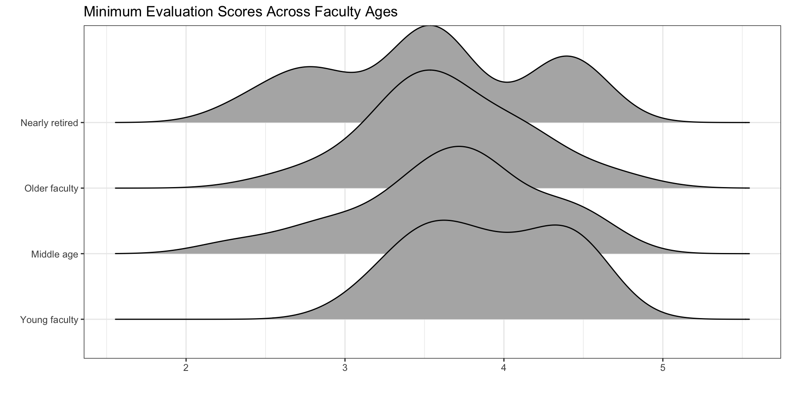

ggplot(data = <NAME OF DATASET>,
mapping = aes(x = <NAME OF NUMERICAL VARIABLE>,
y = <NAME OF CATEGORICAL VARIABLE>)
) +
geom_density_ridges()+
labs(x = "<TITLE FOR THE X-AXIS>",
y = "<TITLE FOR THE Y-AXIS>")Coding a One-way ANOVA – Final Project Work Day
Upcoming Deadlines
- Lab 7 revisions are due by this Friday (by midnight)
- Lab 8 revisions are due next Friday
- Statistical Critique 2 revisions are due next Friday
One Round of Revisions
There is only time for one round of revisions for Lab 8 and Stat Critique #2, so please make sure you feel confident in your revisions! Feel free to stop by my office or schedule a time to chat about your revisions!
Also, please don’t forget reflections!
Additional Revision
If you missed the deadline for the revisions on any assignment, I’m reopening the revisions.
You are permitted to submit one additional assignment for revisions, if you missed the original deadline for the revisions.
Coding a One-way ANOVA
Visualizations – Density Ridges
Revisit the code you wrote for Question 8 of Lab 3
Choosing a Statistical Model
Everyone will fit two one-way ANOVA models — one model for each explanatory variable!
- You will need to choose whether to use a theory-based method or a simulation-based method.
- Your choice is based on the normality condition.
Theory-based Method
To fit a theory-based ANOVA, you use the following code:
Only use if normality is not violated!
If you look at your density ridge plots and you believe the normality condition is violated, you should not use a theory-based method!
Simulation-based Method
To fit a simulation-based ANOVA, you need to carry out the following steps:
- find the observed statistic
- simulate statistics that could have happened if the null was true
- visualize the distribution of simulated statistics (your permutation distribution)
- calculate the p-value for your observed statistic
2 levels versus 3 levels
If you categorical variable has two levels, you need to use a "diff in means" statistic, not an F-statistic!
Discussion – A New Component
Are your p-values trustworthy?
Inspect the conditions of your model!
Independence of Observations
Consider how the data were collected!
Normality of Residuals (Responses)
Use the density ridge plots!
Equal Variances of Each Group
Use the density ridge plots!
Study Limitations
Same questions as last project!
![A four-panel meme featuring characters from Star Wars. In the first panel, Anakin confidently states that the p-value is small and he will conclude cause and effect. In the second panel, Padmé smiles and asks if the study was a randomized experiment. In the third panel, Anakin stares blankly without responding. In the fourth panel, Padmé looks concerned and repeats her question. The meme humorously highlights the mistake of inferring causality from statistical significance without proper experimental design.](images/Cause and effect.png)
Extra Features
Do you want to know the sample size in each group?
# A tibble: 4 × 2
age_cat n
<fct> <int>
1 Young faculty 18
2 Middle age 22
3 Older faculty 40
4 Nearly retired 14Constant Variance
The constant variance condition is really important when the sample sizes of each group are quite different.
Do you want to change the grey background of your plots?
Do you want to change the grey background of your plots?

Do you want to know the variances for each group?
| age_cat | var |
|---|---|
| Young faculty | 0.2111438 |
| Middle age | 0.3425974 |
| Older faculty | 0.2461282 |
| Nearly retired | 0.4610989 |
Constant Variance
A rule that is sometimes used is if the largest variance (0.461) divided by the smallest variance (0.211) is more than 3, then there is evidence of non-equal variance.